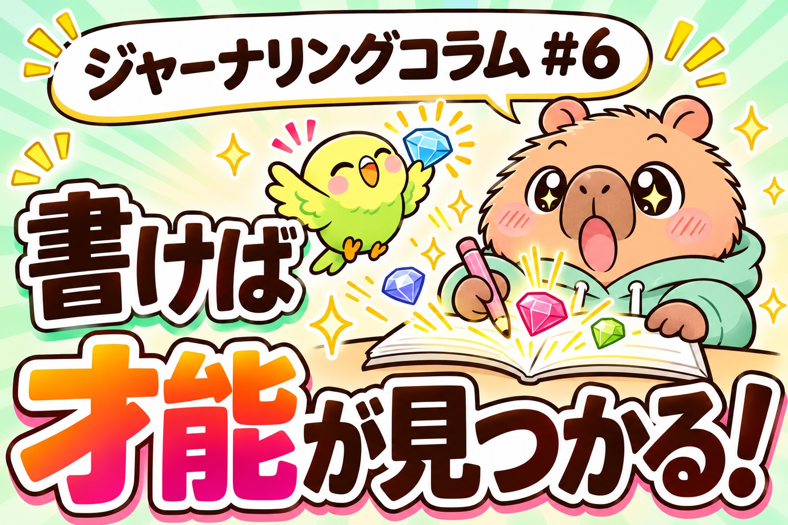
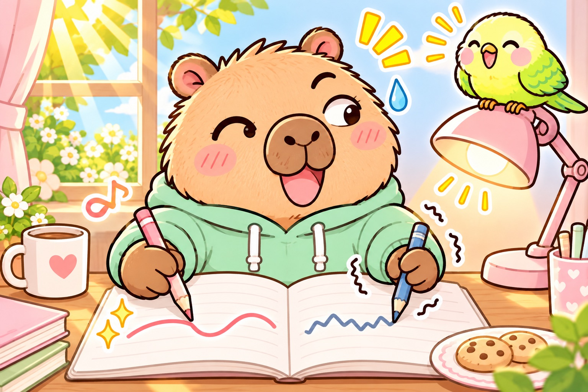
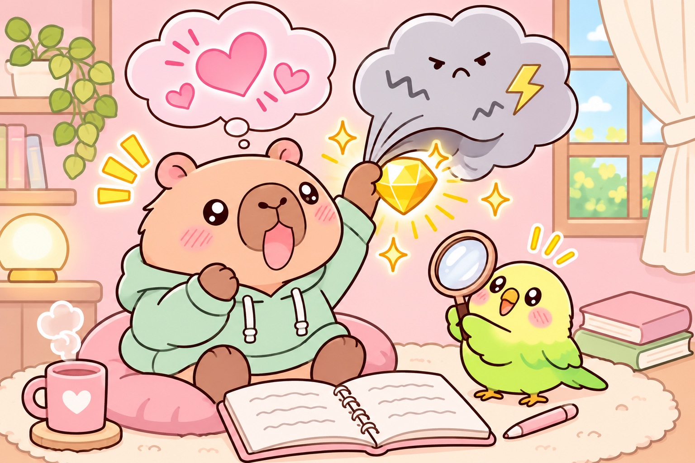
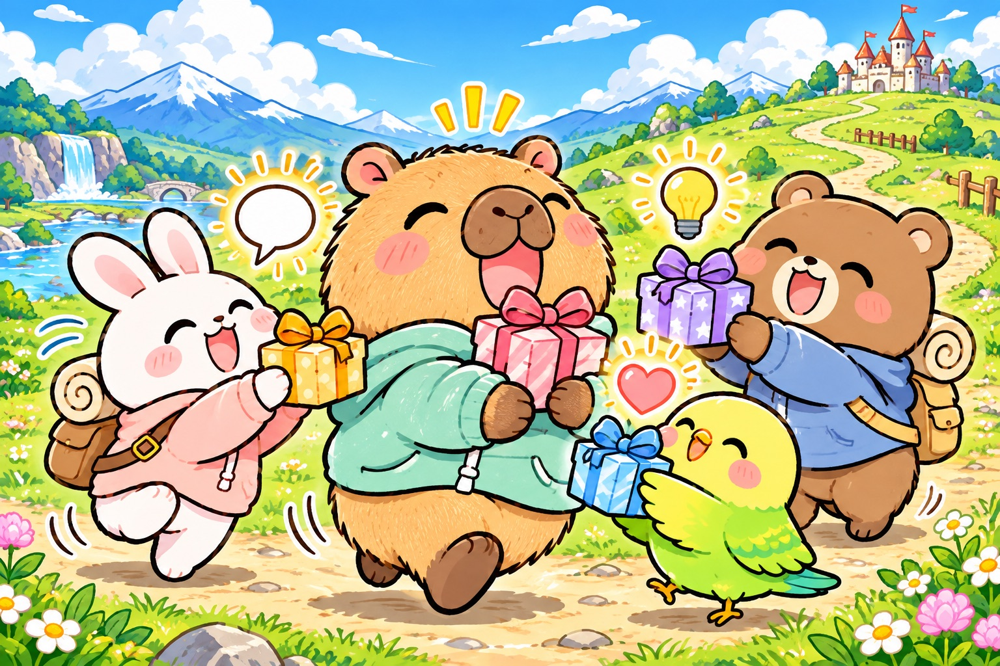
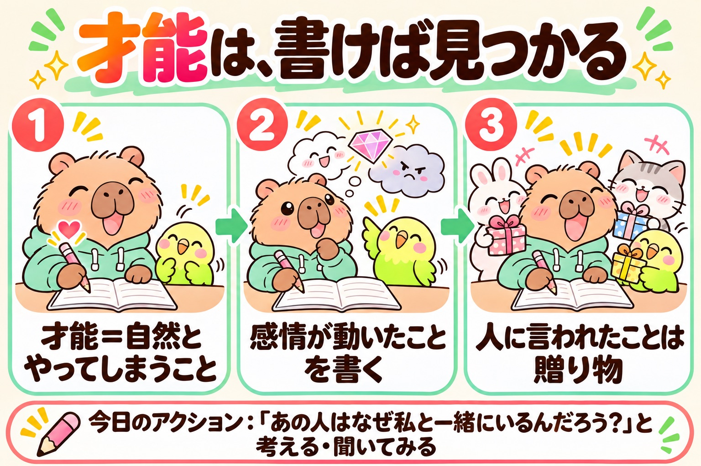

すごいジャーナリング
すごい
ジャーナリング
うまくいっている人は紙に何を書いているのか？
菊地大樹（マンガ：蒼井アオ）サンクチュアリ出版
9月から毎日ページ順に実践してきた本です🦫 録音のあとで開き直したら、今日の話そのものが書いてありました。

朝起きてすぐ録った、ちょっとガサガサ声のおけもんです🤣 見ても聴いても、どっちでもどうぞ😊
♪ BGM：Morning／しゃろう
そんな方、いませんか？
でもね、ストレングスファインダーの考え方では、才能ってもう全員の中にあるんです😊
みなさん、おはようございます〜！
おけもんです🦫
今日は11月26日、今は朝の6時47分。
気づけば11月ももうすぐ終わりですね😳 そろそろ「この1年、どんな1年だったかな」と振り返る時期に近づいてきました。
そんな時、ジャーナリングはぴったりの相棒になってくれます✨
このコラムを読みながら、チャットのみなさんとも交流して、一緒に楽しんでいただけたらうれしいです😊
今日のテーマは「書けば才能が見つかる」。
私と交流がある方はご存知かもしれませんが、私は才能発見ツールと言われる「ストレングスファインダー」の認定コーチをしています。
これまで1000人は軽く超えるセッションや、数え切れないほどのオフ会をさせていただいて、ありがたいことに本当にたくさんの方の才能に触れてきました🙌
そんな中で感じているのが、ジャーナリングとストレングスファインダーは、相性がすごくいいということ。今日はそのお話をさせてくださいね😊
まず「才能」と聞いて、みなさんはどんなことを思い浮かべますか？
有名な方なら大谷翔平さん、私たちの身近なところなら両学長。
人より秀でた何かを持っていたり、世の中で成功している人を思い浮かべる方も多いかもしれませんね。
でも、ストレングスファインダーの考えでは、才能は誰にでもあるものなんです。
気づかなくても自然とやってしまっていること。息を吐くようにやっていること、なんですよね。
たとえば、ジャーナリングでノートに文字を書くとき。
みなさんは無意識に、自分の利き手でペンを持ちますよね。日本人は右利きの方が多いかなと思います。

それと同じように、考え方、行動パターン、そして感情――何にワクワクして、何にモヤモヤするか――にも、利き手のような「癖」があります。
そこに、いい悪いはありません。
強みというよりも、まずあなただけの「特徴」なんですね😊
ただ、ここで一つだけ注意点があります。
才能があるだけでは、まだ「強み」にはなっていないんです。
実際、ストレングスファインダーの結果を見た時の反応は、ほんとにさまざまで。
「あ、わかるわ！自分のいいところ生かしてるわ」と腹落ちする方もいれば、
と感じる方もいます。才能を持っていることと、それを生かして人生を豊かに生きていることは、また別の話なんですよね。
じゃあ、ジャーナリングとどう結びつけていくか。
才能って自分では当たり前すぎて気づかないものなので、まずは「気づいていくこと」がすごく大事になります。
コツはシンプルに一つ。
感情が動いたことを、ノートに書き留めていくことです。
嬉しかったこと、悲しかったこと、イラッとしたこと、モヤモヤしたこと。
それを書き留めて、「なんでこんなに嬉しかったんやろ？」「なんでイラッとしたんやろ？」と考えてみるんです😊
たとえば私は、「未来志向」という資質がすごく高いんです。
将来どんなことが起こるだろうと想像して、「こんなことがあったらいいな」とワクワクするのが、ごくごく当たり前の才能。
だからジャーナリングを書くときも、
と、できる・できないは関係なく、お花畑のように書いているだけで、自分の中からすごくエネルギーが湧いてきます。
一方で、「目標志向」が高い方は、そこから具体的な目標に落として「どうやって何をしていくか」を見定めるのを、自然とやりたくなるんですね。目標がしっかり見定められている時に、グッと力が発揮できます。
逆に、自分の資質と合っていない行動をしていたり、モヤモヤしたりしている時は、資質が乾いている状態。
私はよく、資質を「自分の中で勝手に動いている子どもたち」とお話しするんですが、その子たちが喜んでる・悲しんでる、と見てあげるイメージです😊
もちろん、ストレングスファインダーを受けていない方でも全然大丈夫🙌
「好きな人と喋ってる時間がすごく楽しいな」とか、「今、何が自分の中でイライラしてるんやろ」とか、日々の感情をそのままノートに書いてみてください。

特に、イラッとすることを書くのもすごくおすすめです。
私は「共感性」という資質も高いので、人の気持ちを考えない理不尽な発言には、イラッ、モヤッとします。
って感じるんですよね。
この話、第2回の「書くと、『なぜそこへ向かいたいのか』が見えてくる」ともつながってくるんです。
「なぜ嬉しかったのか」「なぜモヤモヤしたのか」と才能を深掘りしていくと、自分の価値観に気づいていきます。
私には「親密性」という、信頼関係をどんどん深めていきたい・好きな人をもっと好きになっていきたい、という資質が高くあります。
これを深掘りしていった先に見えてきたのが、
という想いでした。才能を掘っていくと、自分がどう歩んでいきたいかという価値観、生き方、北極星につながっていくんですね✨
だから私はコーチングでも、よくこんな問いをお渡ししています。
もう一つ大事なポイント。
才能は自分では気づきづらいからこそ、人から言われたことを書き留めておくのがすごくおすすめです。
自分では全然そう思わなくても、周りからよく言われることってありますよね。
それって、人からのプレゼントなんです🎁

人と人が一緒にいるのには、何かしらの意味があります。相手は、あなたのいいところを感じているから一緒にいてくれるんですよね。
ということで、私がコーチングで大好きな質問を、今日のアクションとしてお届けします🙌

9月から毎日ページ順に実践してきた本です🦫 録音のあとで開き直したら、今日の話そのものが書いてありました。
ジャーナリングを10年続けてきた菊地大樹さん（ダイキさん）の本。後半に、自分の人生を振り返って書く「コンパスノート」から才能を読み解く章があります。才能とは「人に言われなくても、自然とやってしまうこと」。そのうえで、才能に気づきにくい理由が4つ挙げられています👇
もうひとつ、5章にはダイキさん自身の三日坊主の話も。「毎日続けたい」と思ったのに続かなかった本音は「一人で続けるのはつまらない、仲間がほしい」。そこで仲間とジャーナリングする会を開いたら続くようになった、と。
……この実験室も、まさにそれですね🤝
参考にした資料：菊地大樹『すごいジャーナリング』（サンクチュアリ出版）「コンパスノートから『才能』を読み解く方法」／第5章「『意欲はあるのに、動けないのはなぜ？』と書いている」
ストレングスファインダーって何？を、まず9分で知りたい方へ👇
📺 両学長のストレングスファインダー解説 得意を伸ばして、苦手は得意な人に任せたらいい。「あの人はこれが得意」という思い込みも減らせる 👉 タップして動画を見る YouTube（リベ大・2018年）まずは今日、感情が動いたことを1行だけでもノートに書いてみてくださいね😊
そしてタイミングが合えば、身近な人にもぜひ聞いてみてください🙌
こんな感じでこれからも、自分の才能に気づくことや幸せに生きること、書くことの大切さをお届けしていけたらと思っています。
ちなみに今日は、実は昨日、終電まで京都のカラオケにいまして🤣
朝起きてすぐ録ったので、もしかしたら喋り方がしどろもどろだったり、声がガサガサに聞こえたりするかもしれません😂
そんな平常感も、一緒に楽しんでもらえたらうれしいです🙌
今日の話の感想や質問も、どしどしお待ちしています！
今日は長くなったので、おけもんが具体的に自分の才能に気づいたエピソードは明日お話しします😊 「こんなテーマで話してほしい」という質問やリクエストも大歓迎です！